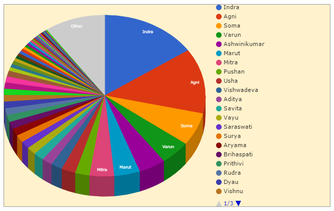

About the Vedic APIs
Some questions, some answers
Vedic literature comprises the four Vedas (Rig, Saam, Yajur, Atharv). Each Veda is a set of Samhitas, Brahmanas and Upanishads. Even though the text of these books is available in digital form, it is difficult to programmatically use the text because it is usually in the form of scanned pages. These APIs make available the text contained in vedic literature in a format that can be used programmatically.
This page contains some questions and answers around these APIs. If your question remains unanswered, ping me (contact is at the end of this page).
Why did you make these APIs
Because they weren't there.
What is the source of this data
The main source is these books:
- Rig Veda Samhita, the English translation according to H. H. Wilson and the Bhashya of Sayanacharya, by Ravi Prakash Arya and K. L. Joshi (Volumes 1 through 4)
- Vedic Index of Names and Subjects, by A. A. Macdonell and A. B. Keith (Volumes 1 and 2)
Additional sources are several other books.
What can I do with this data?
Here are some ideas. (Also, I'll be very happy to link back to your implementation if you send me a URL. I plan to include an Examples page as soon as I can.)
Make an insult-spewing Twitter bot
API to use: vs
May your {word from the category=family filter} be blighted with {word from the category=disease filter}.
May your didhishupati be blighted with sirshashok.
Become a vedic career consultant
API to use: vs
Considered {word from the category=occupation filter} as a career yet? You would be {description for the word}. To become a {word}, you must study {comma-separated list of one item each from category=subject, category=literature, and category=poison}.
Considered pratyenas as a career yet? You would be servant of the king or an officer of the police. To become a pratyenas, you must study nakshatravidya, stoma, and kandavish.
Link up with other resources to tweet a vedic hymn a day
API to use: rv
mandal and sukta.https://en.wikisource.org/wiki/The_Rig_Veda/, create https://en.wikisource.org/wiki/The_Rig_Veda/Mandala_{1}/Hymn_{1}.
mandal is 1 and sukta is 1, create १.१.https://sa.wikisource.org/wiki/%E0%A4%8B%E0%A4%97%E0%A5%8D%E0%A4%B5%E0%A5%87%E0%A4%A6%E0%A4%83, create https://sa.wikisource.org/wiki/%E0%A4%8B%E0%A4%97%E0%A5%8D%E0%A4%B5%E0%A5%87%E0%A4%A6%E0%A4%83_%E0%A4%B8%E0%A5%82%E0%A4%95%E0%A5%8D%E0%A4%A4%E0%A4%82_%E0%A5%A7.%E0%A5%A7
Make infographics out of the numbers
API to use: rv
For example, here is a pie chart of the gods in the Rig Veda, where the slices represent the proportion of hymns sung to them.

Make an app that sends a fact a day.
API to use: rv and vs
Plot the rivers, mountains, and places on a present-day map.
API to use: vs
I found an error in the data.
Please log a GitHub issue.
Any SDKs that I could use?
See if your language is covered here: GitHub repo. If not, raise a GitHub issue.